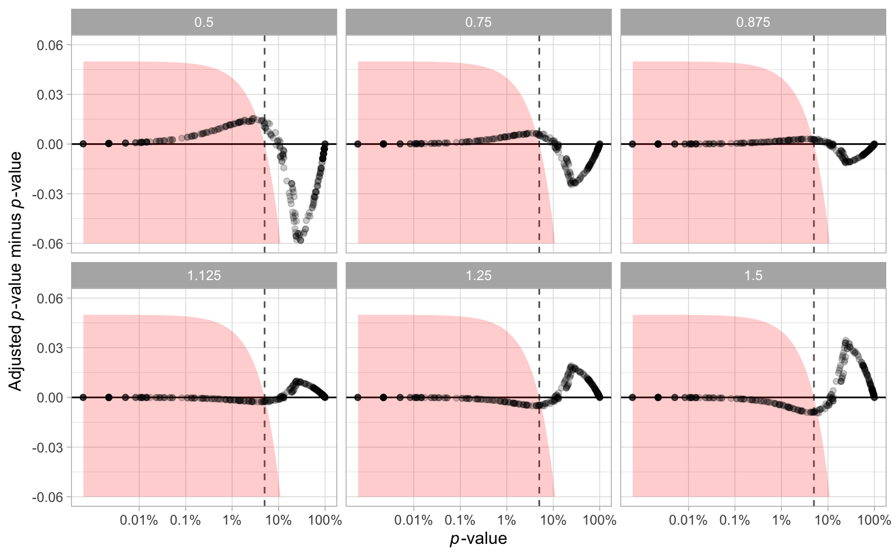

Appendix A — Appendix to “A Plot is Worth a Thousand Tests: Assessing Residual Diagnostics with the Lineup Protocol”
A.1 Additional Details of Testing Procedures
A.1.1 Statistical Significance
Within the context of visual inference, with K independent observers, the visual p-value can be seen as the probability of having as many or more participants detect the data plot than the observed result.
The approach used in Majumder et al. (2013) is as follows. Define X_j = \{0,1\} to be a Bernoulli random variable measuring whether participant j detected the data plot, and X = \sum_{j=1}^{K}X_j be the total number of observers who detected the data plot. Then, by imposing a relatively strong assumption that all K evaluations are fully independent, under H_0 X \sim \mathrm{Binom}_{K,1/m}. Therefore, the p-value of a lineup of size m evaluated by K observer is estimated with P(X \geq x) = 1 - F(x) + f(x), where F(.) is the binomial cumulative distribution function, f(.) is the binomial probability mass function and x is the realization of number of observers choosing the data plot.
As pointed out by VanderPlas et al. (2021), this basic binomial model is deficient. It does not take into account the possible dependencies in the visual test due to repeated evaluations of the same lineup, or account for when participants are offered the option to select one or more “most different” plots, or none, from a lineup. They suggest three common lineup scenarios: (1) K different lineups are shown to K participants, (2) K lineups with different null plots but the same data plot are shown to K participants, and (3) the same lineup is shown to K participants. Scenario 3 is the most feasible to apply, but has the most dependencies to accommodate for the p-value calculation. For Scenario 3, VanderPlas et al propose modelling the probability of plot i being selected from a lineup as \theta_i, where \theta_i \sim \text{Dirichlet}(\alpha) for i=1,...,m and \alpha > 0. The number of times plot i being selected in K evaluations is denoted as c_i. In case participant j makes multiple selections, 1/s_j will be added to c_i instead of one, where s_j is the number of plots participant j selected for j=1,...K. This ensures \sum_{i}c_i=K. Since we are only interested in the selections of the data plot i, the marginal model can be simplified to a beta-binomial model and thus the visual p-value is given as
P(C \geq c_i) = \sum_{x=c_i}^{K}{K \choose x}\frac{B(x + \alpha, K - x + (m - 1)\alpha)}{B(\alpha, (m-1)\alpha)},\quad \text{for} \quad c_i \in \mathbb{Z}_0^+ \tag{A.1}
where B(.) is the beta function defined as
B(a, b) = \int_{0}^{1}t^{\alpha - 1}(1-t)^{b-1}dt,\quad \text{where}\quad a,b>0. \tag{A.2}
We extend the equation to non-negative real number c_i by applying a linear approximation
P(C \geq c_i) = P(C \geq \lceil c_i \rceil) + (\lceil c_i \rceil - c_i) P(C = \lfloor c_i \rfloor), \quad \text{for}\quad c_i \in \mathbb{R}_0^+, \tag{A.3}
where P(C \geq \lceil c_i \rceil) is calculated using Equation A.1 and P(C = \lfloor c_i \rfloor) is calculated by
P(C = c_i) = {K \choose c_i}\frac{B(c_i + \alpha, K - c_i + (m - 1)\alpha)}{B(\alpha, (m-1)\alpha)},\quad \text{for} \quad c_i \in \mathbb{Z}_0^+. \tag{A.4}
The parameter \alpha used in Equation A.1 and Equation A.4 is usually unknown and will need to be estimated from the survey data. An interpretation of \alpha is that when it is low only a few plots are attractive to the observers and tend to be selected, and when high, most plots are equally likely to be chosen. VanderPlas et al define c-interesting plot to be if c or more participants select the plot as the most different. The expected number of plots selected at least c times, \mathrm{E}[Z_c], is then calculated as
\mathrm{E}[Z_c(\alpha)] = \frac{m}{B(\alpha, (m-1)\alpha)}\sum_{\lceil c \rceil}^{K}{K \choose x} B(x + \alpha, K - x + (m-1)\alpha). \tag{A.5}
With Equation A.5, \alpha can be estimated using maximum likelihood estimation. Precise estimation of \alpha, is aided by evaluation of Rorschach lineups, where all plots are null plots. In a Rorschach, in theory all plots should be equally likely, but in practice some (irrelevant) visual elements may be more eye-catching than others. This is what \alpha captures, the capacity for extraneous features to distract the observer for a particular type of plot display.
A.1.2 Effect Size Derivation
Effect size can be defined as the difference of a parameter for a particular model or distribution, or a statistic derived from a sample. Importantly, it needs to reflect the treatment we try to measure. Centred on a conventional statistical test, we usually can deduce the effect size from the test statistic by substituting the null parameter value. When considering the diagnostics of residual departures, there exist many possibilities of test statistics for a variety of model assumptions. Meanwhile, diagnostic plots such as the residual plot have no general agreement on measuring how strong a model violation pattern is. To build a bridge between various residual-based tests, and the visual test, we focus on the shared information embedded in the testing procedures, which is the distribution of residuals. When comes to comparison of distribution, Kullback-Leibler divergence (Kullback and Leibler 1951) is a classical way to represent the information loss or entropy increase caused by the approximation to the true distribution, which in our case, the inefficiency due to the use of false model assumptions.
Following the terminology introduced by Kullback and Leibler (1951), P represents the measured probability distribution, and Q represents the assumed probability distribution. The Kullback-Leibler divergence is defined as \int_{-\infty}^{\infty}\log(p(x)/q(x))p(x)dx, where p(.) and q(.) denote probability densities of P and Q.
Let \boldsymbol{X} denotes the p + 1 predictors with n observations, \boldsymbol{b} = (\boldsymbol{X}'\boldsymbol{X})^{-1}\boldsymbol{X}'\boldsymbol{y} denotes the OLS solution, \boldsymbol{R} = \boldsymbol{I}_n -\boldsymbol{X}(\boldsymbol{X}'\boldsymbol{X})^{-1}\boldsymbol{X}' denotes the residual operator, and let \boldsymbol{\varepsilon} \sim N(\boldsymbol{0},\sigma^2\boldsymbol{I}) denotes the error. The residual vector
\begin{align*} \boldsymbol{e} &= \boldsymbol{y} - \boldsymbol{X}\boldsymbol{b} \\ &= \boldsymbol{y} - \boldsymbol{X}(\boldsymbol{X}'\boldsymbol{X})^{-1}\boldsymbol{X}'\boldsymbol{y} \\ &= (\boldsymbol{I} -\boldsymbol{X}(\boldsymbol{X}'\boldsymbol{X})^{-1}\boldsymbol{X}')\boldsymbol{y} \\ &= \boldsymbol{R}\boldsymbol{y} \\ &= \boldsymbol{R}(\boldsymbol{X}\boldsymbol{\beta} + \boldsymbol{\varepsilon}) \\ &= \boldsymbol{R}\boldsymbol{\varepsilon}. \end{align*}
Because \text{rank}(\boldsymbol{R}) = n - p - 1 < n, \boldsymbol{e} follows a degenerate multivariate normal distribution and does not have a density. Since the Kullback-Leibler divergence requires a proper density function, we need to simplify the covariance matrix of \boldsymbol{e} by setting all the off-diagonal elements to 0. Then, the residuals will be assumed to follow N(\boldsymbol{0}, diag(\boldsymbol{R}\sigma^2)) under the null hypothesis that the model is correctly specified. If the model is however misspecified due to omitted variables \boldsymbol{Z}, or a non-constant variance \boldsymbol{V}, the distribution of residuals can be derived as N(\boldsymbol{R}\boldsymbol{Z}\boldsymbol{\beta}_z, \text{diag}(\boldsymbol{R}\sigma^2)) and N(\boldsymbol{0}, \text{diag}(\boldsymbol{R}\boldsymbol{V}\boldsymbol{R}')) respectively.
By assuming both P and Q are multivariate normal density functions, the Kullback-Leibler divergence can be rewritten as KL = \frac{1}{2}\left(\log\frac{|\Sigma_p|}{|\Sigma_q|} - n + \text{tr}(\Sigma_p^{-1}\Sigma_q) + (\mu_p - \mu_q)'\Sigma_p^{-1}(\mu_p - \mu_q)\right).
Then, we can combine the two residual departures into one formula
KL = \frac{1}{2}\left(\log\frac{|\text{diag}(\boldsymbol{R}\boldsymbol{V}\boldsymbol{R}')|}{|\text{diag}(\boldsymbol{R}\sigma^2)|} - n + \text{tr}(\text{diag}(\boldsymbol{R}\boldsymbol{V}\boldsymbol{R}')^{-1}\text{diag}(\boldsymbol{R}\sigma^2)) + \boldsymbol{\mu}_z'(\boldsymbol{R}\boldsymbol{V}\boldsymbol{R}')^{-1}\boldsymbol{\mu}_z\right).
When there are omitted variables but constant error variance, the formula can be reduced to
KL = \frac{1}{2}\left(\boldsymbol{\mu}_z'(\text{diag}(\boldsymbol{R}\sigma^2))^{-1}\boldsymbol{\mu}_z\right).
And when the model equation is correctly specified but the error variance is non-constant, the formula can be reduced to
KL = \frac{1}{2}\left(log\frac{|\text{diag}(\boldsymbol{R}\boldsymbol{V}\boldsymbol{R}')|}{|\text{diag}(\boldsymbol{R}\sigma^2)|} - n + \text{tr}(\text{diag}(\boldsymbol{R}\boldsymbol{V}\boldsymbol{R}')^{-1} \text{diag}(\boldsymbol{R}\sigma^2))\right).
To compute the effect size for each lineup we simulate a sufficiently large number of samples from the same model with the number of observations n fixed for each sample. We then compute the effect size for each sample and take the average as the final value. This ensures lineups constructed with the same experimental factors will share the same effect size.
A.1.3 Sensitivity Analysis for \alpha
The parameter \alpha used for the p-value calculation needs to be estimated from responses to null lineups. With a greater value of \hat{\alpha}, the p-value will be smaller, resulting in more lineups being rejected. However, The way we generate Rorschach lineup is not strictly the same as what suggested in VanderPlas et al. (2021) and Buja et al. (2009). Therefore, we conduct a sensitivity analysis in this section to examine the impact of the variation of the estimator \alpha on our primary findings.
The analysis is conducted by setting up several scenarios, where the \alpha is under or overestimated by 12.5%, 25% and 50%. Using the adjusted \hat{\alpha}, we recalculate the p-value for every lineup and show the results in Figure . It can be observed that there are some changes to p-values, especially when the \hat{\alpha} is multiplied by 50%. However, Table shows that adjusting \hat{\alpha} will not result in a huge difference in rejection decisions. There are only a small percentage of cases where the rejection decision change. It is very unlikely the downstream findings will be affected because of the estimate of \alpha.
A.1.4 Effect of Number of Evaluations on the Power of a Visual Test
When comparing power of visual tests across different fitted value distributions, we have discussed the number of evaluations on a lineup will affect the power of the visual test. Using the lineups with uniform fitted value distribution, we show in Figure A.2 the change of power of visual tests due to different number of evaluations. It can be learned that as the number of evaluations increases, the power will increase but the margin will decrease. Considering we have eleven evaluations on lineups with uniform fitted value distribution, and five evaluations on other lineups, it is necessary to use the same number of evaluations for each lineup in comparison.

A.1.5 Power of a RESET Test under Different Auxiliary Regression Formulas
It is found in the result that the power of a RESET test will be affected by the highest order of fitted values included in the auxiliary formula. And we suspect that the current recommendation of the highest order - four, is insufficient to test complex non-linear structures such as the “triple-U” shape designed in this paper. Figure A.3 illustrates the change of power of RESET test while testing the “U” shape and the “triple-U” shape with different highest orders. Clearly, when testing a simple shape like the “U” shape, the highest order has very little impact on the power. But for testing the “triple-U” shape, there will be a loss of power if the recommended order is used. To avoid the loss of power, the highest order needs to be set to at least six.
A.1.6 Conventional Test Rejection Rate for Varying Significance Levels
In the main paper, Section 2.5.1 and Section 2.5.2 compared the power, and the decisions made by the conventional tests and the visual test. The power curves for the visual test is effectively a right-shift from the conventional test. The effect is that the visual test rejects less often than the conventional test, at the same significance level. We also saw that the visual test rejected a subset of those that the conventional tests rejected. This means that they agreed quite well - only residual plots rejected by the conventional tests were rejected by the visual test. There was little disagreement, where residual plots not rejected by the conventional test were rejected by the visual test. The question arises whether the decisions made conventional test could be made similar to that of the visual test by reducing the significance level. Reducing the significance level from 0.05, to 0.01, 0.001, … will have the effect of rejecting fewer of the residual plots.
It would be interesting if a different conventional test significance level results in both the visual tests and conventional tests reject only the same residual plots, and fails to reject the same residual plots. This would be a state where both systems agree perfectly. Figure examines this. Plot A shows the percentage of residual plots rejected by the visual test, given the conventional test rejected (solid lines) or failed to reject (dashed lines). The vertical grey line marks significance level 0.05. When the significance level gets smaller, it is possible to see that the visual tests reject (nearly) 100% of the time that the conventional test rejects. However, there is no agreement, because the visual tests also increasingly reject residual plots where the conventional test failed to reject. Plot B is comparable to an ROC curve, where the percentage visual test rejection conditional on conventional test decision is plotted: Reject conditional on reject is plotted against reject conditional on fail to reject, for different significance levels. The non-linearity pattern results are close to being ideal, that the percentage of reject relative to fail to reject increases very slowly as the reject relative to reject converges to 100. The heteroskedasticity pattern is more problematic, and shows that the cost of rejecting less with the conventional test is disagreement with the visual test.
A.2 Additional Details of Experimental Setup
A.2.1 Non-linearity Model
The non-linearity model used in the experiment includes a non-linear term \boldsymbol{z} constructed using Hermite polynomials on random vector \boldsymbol{x} formulated as
\begin{align*} \boldsymbol{y} &= \boldsymbol{1}_n + \boldsymbol{x} + \boldsymbol{z} + \boldsymbol{\varepsilon},\\ \boldsymbol{x} &= g(\boldsymbol{x}_{raw}, 1), \\ \boldsymbol{z} &= g(\boldsymbol{z}_{raw}, 1), \\ \boldsymbol{z}_{raw} &= He_j(g(\boldsymbol{x}, 2)), \end{align*}
where \boldsymbol{y}, \boldsymbol{x}, \boldsymbol{\varepsilon}, \boldsymbol{x}_{raw}, \boldsymbol{z}_{raw} are vectors of size n, \boldsymbol{1}_n is a vector of ones of size n, He_{j}(.) is the jth-order probabilist’s Hermite polynomials (Hermite 1864; originally by Laplace 1820), \varepsilon \sim N(\boldsymbol{0}_n, \sigma^2\boldsymbol{I}_n), and g(\boldsymbol{x}, k) is a scaling function to enforce the support of the random vector to be [-k, k]^n defined as
g(\boldsymbol{x}, k) = 2k\cdot\frac{\boldsymbol{x} - x_{min}\boldsymbol{1}_n}{x_{max} - x_{min}} - k, \quad \text{for} \quad k > 0. \tag{A.6}
where \displaystyle x_{min} = \min_{i\in \{1, ..., n\}} x_i, \displaystyle x_{max} = \max_{i\in \{1, ..., n\}} x_i and x_i is the i-th entry of \boldsymbol{x}. The function hermite from the R package mpoly (Kahle 2013) is used to simulate \boldsymbol{z}_{raw} to generate Hermite polynomials.
The null regression model used to fit the realizations generated by the above model is formulated as
\boldsymbol{y} = \beta_0\boldsymbol{1}_n + \beta_1 \boldsymbol{x} + \boldsymbol{u}, \tag{A.7}
where \boldsymbol{u} \sim N(\boldsymbol{0}, \sigma^2\boldsymbol{I}_n). Here \boldsymbol{z} is a higher order term of \boldsymbol{x} and leaving it out in the null regression results in model misspecification.
A.2.2 Heteroskedasticity Model
The heteroskedasticity model used in the experiment is formulated as
\begin{align*} \boldsymbol{y} &= \boldsymbol{1}_n + \boldsymbol{x} + \boldsymbol{\varepsilon},\\ \boldsymbol{x} &= g(\boldsymbol{x}_{raw}, 1),\\ \boldsymbol{\varepsilon} &\sim N(\boldsymbol{0}_n, \boldsymbol{1}_n + (2 - |a|)(\boldsymbol{x} - a\boldsymbol{1}_n)'(\boldsymbol{x} - a\boldsymbol{1}_n) b \boldsymbol{I}_n), \end{align*}
where \boldsymbol{y}, \boldsymbol{x}, \boldsymbol{\varepsilon} are vectors of size n and g(.) is the scaling function defined in Equation A.6. The null regression model used to fit the realizations generated by the above model is formulated exactly the same as Equation A.7.
For b \neq 0, the variance-covariance matrix of the error term \boldsymbol{\varepsilon} is correlated with the predictor \boldsymbol{x}, which will lead to the presence of heteroskedasticity.
Since \text{supp}(X) = [-1, 1], choosing a to be -1, 0 and 1 can generate “left-triangle”, “butterfly” and “right-triangle” shapes. The term (2 - |a|) maintains the magnitude of residuals across different values of a.
A.2.3 Controlling the Signal Strength
The three parameters n, \sigma and b are important for controlling the strength of the signal to generate lineups with a variety difficulty levels. This will ensure that estimated power curves will be smooth and continuous, and that participants are allocated a set of lineups with a range of difficulty.
Parameter \sigma \in \{0.5, 1, 2, 4\} and b \in \{0.25, 1, 4, 16, 64\} are used in data collection periods I and II respectively. A large value of \sigma will increase the variation of the error of the non-linearity model and decrease the visibility of the visual pattern. The parameter b controls the variation in the standard deviation of the error across the support of the predictor. A larger value of b generates a larger ratio between it is smallest and highest values, making the visual pattern more obvious. The sample size n sharpens (or blurs) a pattern when it is larger (or smaller).
A.2.4 Lineup Allocation to Participants
There are a total of 4 \times 4 \times 3 \times 4 = 192 and 3 \times 5 \times 3 \times 4 = 180 combinations of parameter values for the non-linearity model and heteroskedasticity models respectively. Three replications for each combination results in 192 \times 3 = 576 and 180 \times 3 = 540 lineups, respectively.
Each lineup needs to be evaluated by at least five participants. From previous work, and additional pilot studies for this experiment, we decided to record evaluations from 20 lineups for each participant. Two of the 20 lineups with clear visual patterns were used as attention checks, to ensure quality data. Thus, 576 \times 5 / (20-2) = 160 and 540 \times 5 / (20-2) = 150 participants were needed to cover the experimental design for the data collection periods I and II, respectively. The factor levels and range of difficulty was assigned relatively equally among participants.
Data collection period III was primarily to obtain Rorschach lineup evaluations to estimate \alpha, and also to obtain additional evaluations of lineups made with uniform fitted value distribution to ensure consistency in the results. To construct a Rorschach lineup, the data is generated from a model with zero effect size, while the null data are generated using the residual rotation technique. This procedure differs from that of the canonical Rorschach lineup, where all 20 plots are generated directly from the null model, so the method suggested in VanderPlas et al. (2021) for typical lineups containing a data plot is used to estimate \alpha. The 3 \times 4 = 12 treatment levels of the common factors, replicated three times results in 36 lineups. And 6 more evaluations on the 279 lineups with uniform fitted value distribution, results in at least (36 \times 20 + 279 \times 3 \times 6) / (20-2) = 133 participants needed.
A.2.5 Mapping of Participants to Experimental Factors
Mapping of participants to experimental factors is an important part of experimental design. Essentially, we want to maximum the difference in factors exposed to a participant. For this purpose, we design an algorithm to conduct participant allocation. Let L be a set of available lineups and S be a set of available participants. According to the experimental design, the availability of a lineup is associated with the number of participants it can assign to. For lineups with uniform fitted value distribution, this value is 11. And other lineups can be allocated to at most five different participants. The availability of a participant is associated with the number of lineups that being allocated to this participant. A participant can view at most 18 different lineups.
The algorithm starts from picking a random participant s \in S with the minimum number of allocated lineups. It then tries to find a lineup l \in L that can maximise the distance metric D and allocate it to participant s. Set L and S will be updated and the picking process will be repeated until there is no available lineups or participants.
Let F_1,...,F_q be q experimental factors, and f_1, ...,f_q be the corresponding factor values. We say f_i exists in L_{s} if any lineup in L_{s} has this factor value. Similarly, f_if_j exists in L_{s} if any lineup in L_{s} has this pair of factor values. And f_if_jf_k exists in L_{s} if any lineup in L_{s} has this trio of factor values. The distance metric D is defined between a lineup l and a set of lineups L_{s} allocated to a participant s if L_{s} is non-empty:
\begin{equation*} D = C - \sum_{1\leq i \leq q}I(f_i\text{ exists in }L_{s}) - \sum_{\substack{1\leq i \leq q-1 \\ i < j \leq q}}I(f_if_j\text{ exists in }L_{s}) - \sum_{\substack{1\leq i \leq q - 2 \\ i < j \leq q - 1 \\ j < k \leq q}}I(f_if_jf_k\text{ exists in }L_{s}) \end{equation*}
where C is a sufficiently large constant such that D > 0. If L_{s} is empty, we define D = 0.
The distance measures how different a lineup is from the set of lineups allocated to the participant in terms of factor values. Thus, the algorithm will try to allocate the most different lineup to a participant at each step.
In Figure A.5 and Figure A.6, we present examples of lineup allocations generated by our algorithm for data collection periods I and II, respectively. These figures illustrate the factor values presented to the first 20 participants recruited during each period. It can be observed that the algorithm effectively distributed almost all possible one-way and two-way factor combinations among the participants, thereby ensuring a diverse set of lineups for each participant.

A.2.6 Data Collection Process
The survey data is collected via a self-hosted website designed by us. The complete architecture is provided in Figure A.7. The website is built with the Flask (Grinberg 2018) web framework and hosted on PythonAnywhere (PythonAnywhere LLP 2023). It is configured to handle HTTP requests such that participants can correctly receive webpages and submit responses. Embedded in the resources sent to participants, the jsPsych front-end framework (De Leeuw 2015) instructs participants’ browsers to render an environment for running behavioural experiments. During the experiment, this framework will automatically collect common behavioural data such as response time and clicks on buttons. participants’ responses are first validated by a scheduled Python script run on the server, then push to a Github repository. Lineup images shown to users are saved in multiple Github repositories and hosted in corresponding Github pages. The URLs to these images are resolved by Flask and bundled in HTML files.
Once the participant is recruited from Prolific (Palan and Schitter 2018), it will be redirected to the entry page of our study website. An image of the entry page is provided in Figure A.8. Then, the participant needs to submit the online consent form and fill in the demographic information as shown in Figure A.9 and Figure A.10 respectively. Before evaluating lineups, participant also need to read the training page as provide in Figure A.11 to understand the process. An example of the lineup page is given in Figure A.12. A half of the page is taken by the lineup image to attract participant’s attention. The button to skip the selections for the current lineup is intentionally put in the corner of the bounding box with smaller font size, such that participants will not misuse this functionality.


A.3 Analysis of Results Relative to Data Collection Process
A.3.1 Demographics
Throughout the study, we have collected 7254 evaluations on 1116 non-null lineups. Table A.1 gives further details about the number of evaluations, lineups and participants over pattern types and data collection periods.
| Number | I | II | III | I | II | II | Total |
|---|---|---|---|---|---|---|---|
| Lineups | 576 | 0 | 144 | 0 | 540 | 135 | 1116 |
| Evaluations | 2880 | 0 | 864 | 0 | 2700 | 810 | 7254 |
| Participants | 160 | 0 | 123 | 0 | 160 | 123 | 443 |
Along with the responses to lineups, we have collected a series of demographic information including age, pronoun, education background and previous experience in studies involved data visualization. Table A.2, Table A.3, Table A.4 and Table A.5 provide summary of the demographic data.
It can be observed from the tables that most participants have Diploma or Bachelor degrees, followed by High school or below and the survey data is gender balanced. Majority of participants are between 18 to 39 years old and there are slightly more participants who do not have previous experience than those who have.
| Pronoun | Period I | % | Period II | % | Period III | % | Total | % |
|---|---|---|---|---|---|---|---|---|
| He | 77 | 17.4 | 79 | 17.8 | 61 | 13.8 | 217 | 49.0 |
| She | 78 | 17.6 | 77 | 17.4 | 61 | 13.8 | 216 | 48.8 |
| Other | 5 | 1.1 | 4 | 0.9 | 1 | 0.2 | 10 | 2.3 |
| 160 | 36.1 | 160 | 36.1 | 123 | 27.8 | 443 | 100.0 |
| Age group | Period I | % | Period II | % | Period III | % | Total | % |
|---|---|---|---|---|---|---|---|---|
| 18-24 | 83 | 18.7 | 86 | 19.4 | 51 | 11.5 | 220 | 49.7 |
| 25-39 | 69 | 15.6 | 63 | 14.2 | 63 | 14.2 | 195 | 44.0 |
| 40-54 | 6 | 1.4 | 8 | 1.8 | 6 | 1.4 | 20 | 4.5 |
| 55-64 | 2 | 0.5 | 3 | 0.7 | 3 | 0.7 | 8 | 1.8 |
| 160 | 36.1 | 160 | 36.1 | 123 | 27.8 | 443 | 100.0 |
| Education | Period I | % | Period II | % | Period III | % | Total | % |
|---|---|---|---|---|---|---|---|---|
| High School or below | 41 | 9.3 | 53 | 12.0 | 33 | 7.4 | 127 | 28.7 |
| Diploma and Bachelor Degree | 92 | 20.8 | 79 | 17.8 | 66 | 14.9 | 237 | 53.5 |
| Honours Degree | 6 | 1.4 | 15 | 3.4 | 6 | 1.4 | 27 | 6.1 |
| Masters Degree | 21 | 4.7 | 13 | 2.9 | 16 | 3.6 | 50 | 11.3 |
| Doctoral Degree | 0 | 0.0 | 0 | 0.0 | 2 | 0.5 | 2 | 0.5 |
| 160 | 36.1 | 160 | 36.1 | 123 | 27.8 | 443 | 100.0 |
| Previous experience | Period I | % | Period II | % | Period III | % | Total | % |
|---|---|---|---|---|---|---|---|---|
| No | 96 | 21.7 | 88 | 19.9 | 67 | 15.1 | 251 | 56.7 |
| Yes | 64 | 14.4 | 72 | 16.3 | 56 | 12.6 | 192 | 43.3 |
| 160 | 36.1 | 160 | 36.1 | 123 | 27.8 | 443 | 100.0 |
A.3.2 Data Collection Periods

We have the same type of model collected over different data collection periods, that may lead to unexpected batch effect. Figure A.13 and Figure A.14 provide two lineups to examine whether there is an actual difference across data collection periods for non-linearity model and heteroskedasticity model respectively. To emphasize the tail behaviour and display fewer outliers, we use the “letter-value” boxplot (Hofmann et al. 2017) which is an extension of the number of “letter value” statistics to check the weighed proportion of detect over different data collection period. The weighted proportion of detect is calculated by taking the average of c_i of a lineup over a data collection period. Within our research team, we can not identify the data plot from the null plots for these two lineups, result in p-values much greater than 5%. Thus, there is no clear evidence of batch effect.